Organizza il tuo itinerario...
Plan & Go
Plan & Go è l'app per tutti i viaggiatori che vogliono esplorare nuovi luoghi, conoscere le bellezze e la storia delle città, e pianificare viaggi personalizzati con estrema facilità.
Obiettivo
Creare una nuova app di viaggi capace di distinguersi dai vari competitors e che possa offrire un servizio completo di varie funzionalità adatte alle esigenze dell'utente.
Problema
Sul mercato sono presenti tante app di viaggi, molte volte però, gli utenti si ritrovano a consultarne più di una contemporaneamente perché queste non ricoprono tutte le funzionalità che servono ad un utente viaggiatore. Il processo di conoscere, pianificare e prenotare biglietti può diventare per gli utenti fastidioso e richiedere molto tempo.
Processo
Ho iniziato effettuando una ricerca per conoscere al meglio comportamenti, bisogni e motivazioni degli utenti.
Dopo aver analizzato i dati, ho creato delle user personas, ovvero l’identikit degli utenti ideali, rappresentante il target (persone tra i 18 e i 55 anni d’età amanti del viaggio e soprattutto tecnologiche).
Ho condotto poi uno studio sui competitors per comprendere i prodotti già presenti sul mercato.
Fatto questo, ho organizzato l'architettura dell'informazione.
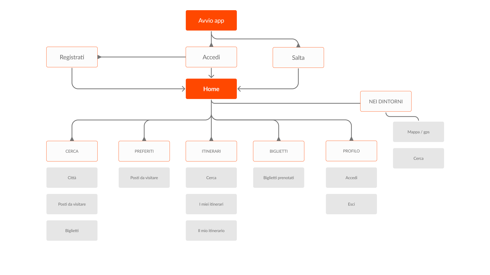
Visual Design
Dopo aver concluso la fase di ricerca mi sono concentrata sulla parte più visual dell'app, definendo tutti i componenti grafici dell'interfaccia; iniziando dalla tipografia, color palette, icone e griglia.
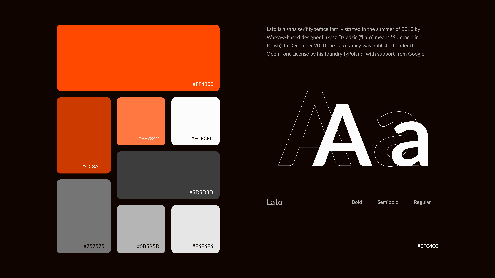
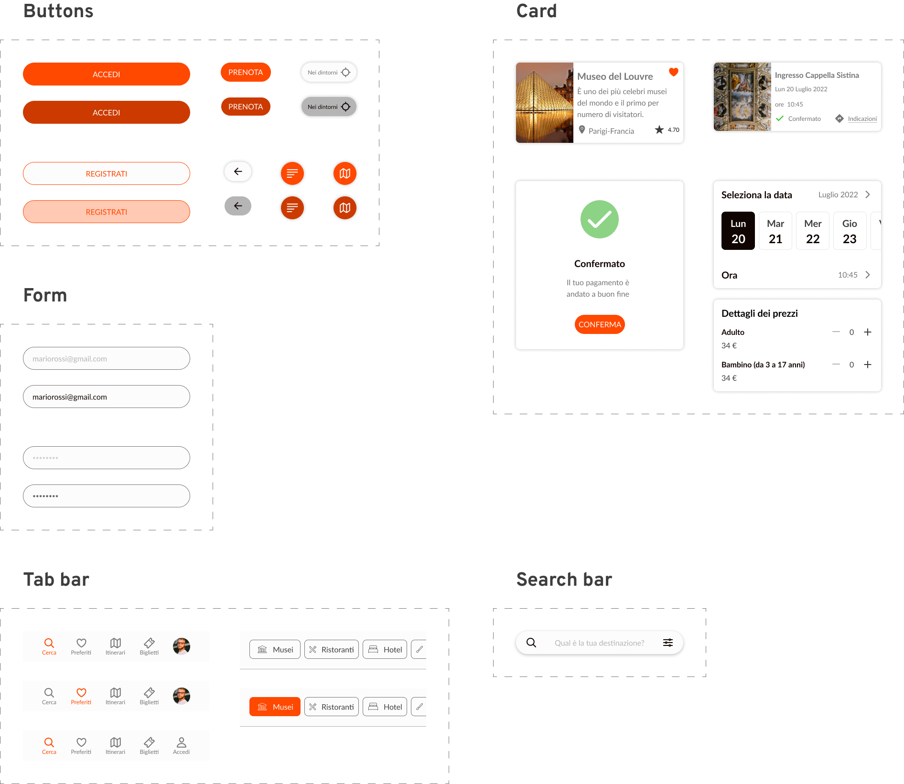
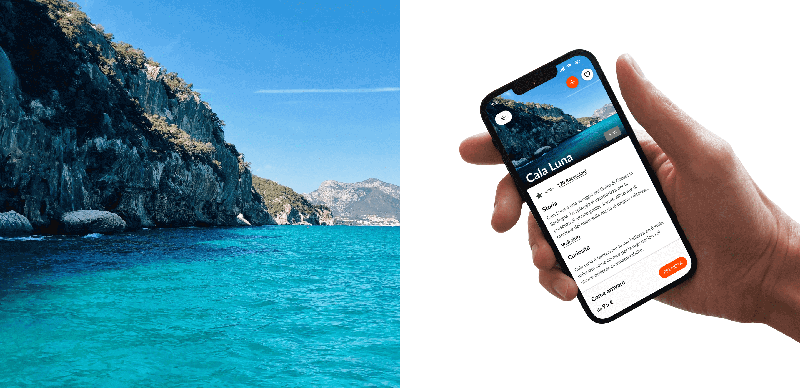
Accesso/Registrazione
L'apertura dell'app mostra una procedura guidata che consente all’utente di:
1. Effettuare l’accesso con email e password oppure utilizzando a scelta un account di Google, Facebook o Apple.
2. In assenza di un account, procedere con la registrazione.
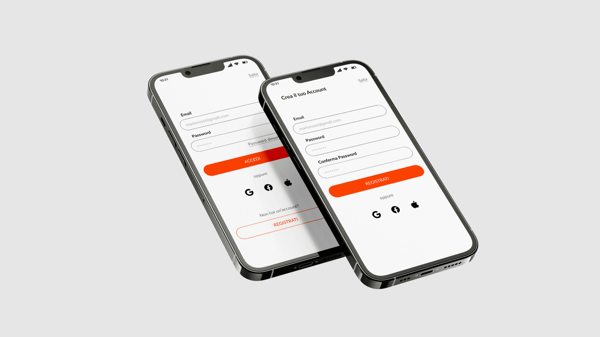
Home
Nella home vengono suggerite delle destinazioni pertinenti rispetto alle ricerche fatte dall’utente, ma è possibile anche effettuare una ricerca mirata grazie alla search bar posta in alto.
Il pulsante in basso consente di visualizzare sulla mappa, grazie alla geolocalizzazione, posti consigliati nelle vicinanze.
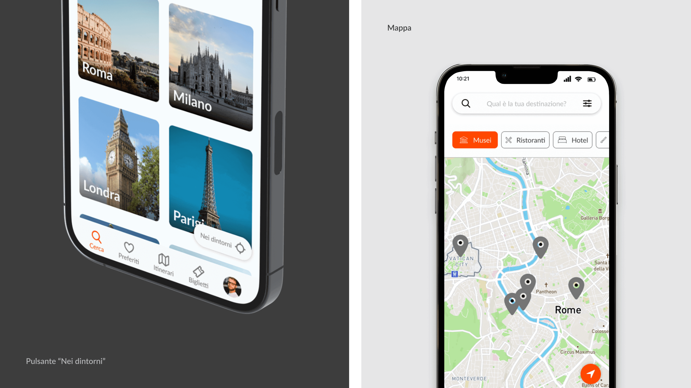
Le città
In questa scheda sono presenti varie sezioni riguardanti la storia, le curiosità e i posti da visitare di ogni singola città.
La presenza di una Tab bar a scorrimento laterale aiuta l'utente a filtrare le opzioni in base alle sue preferenze.
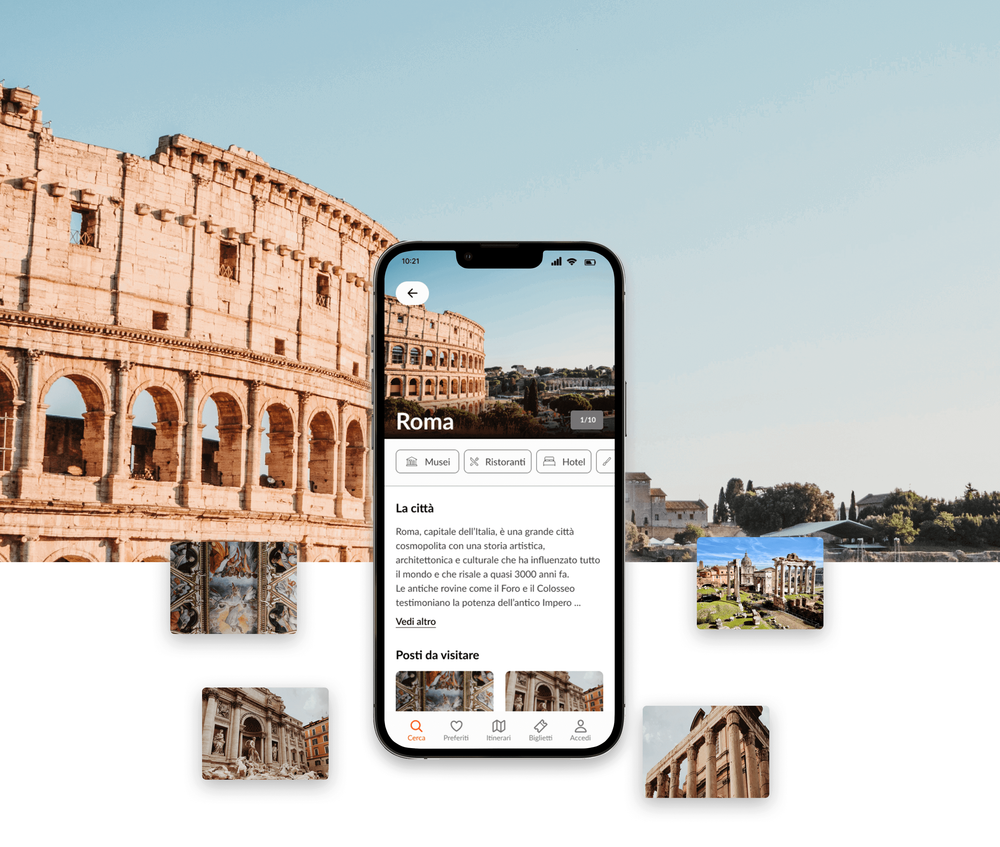
Luogo da visitare
Questa interfaccia mostra dettagli e informazioni relativi al luogo da visitare, come storia, curiosità, orari di apertura, prezzi, etc.
Dopo aver scelto la data, la fascia oraria, il numero di persone e il metodo di pagamento, l'utente visualizza un riepilogo e la conferma della prenotazione.
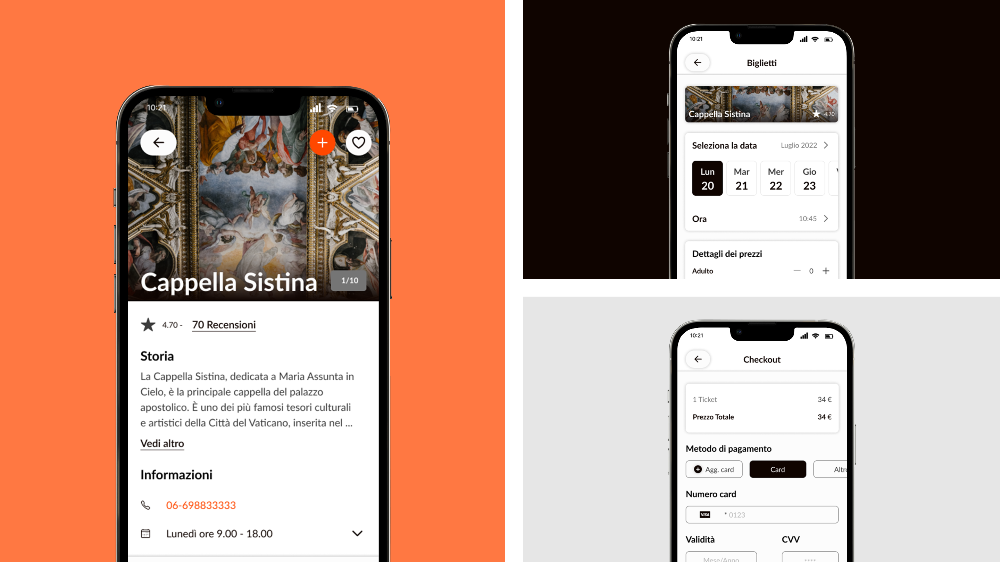
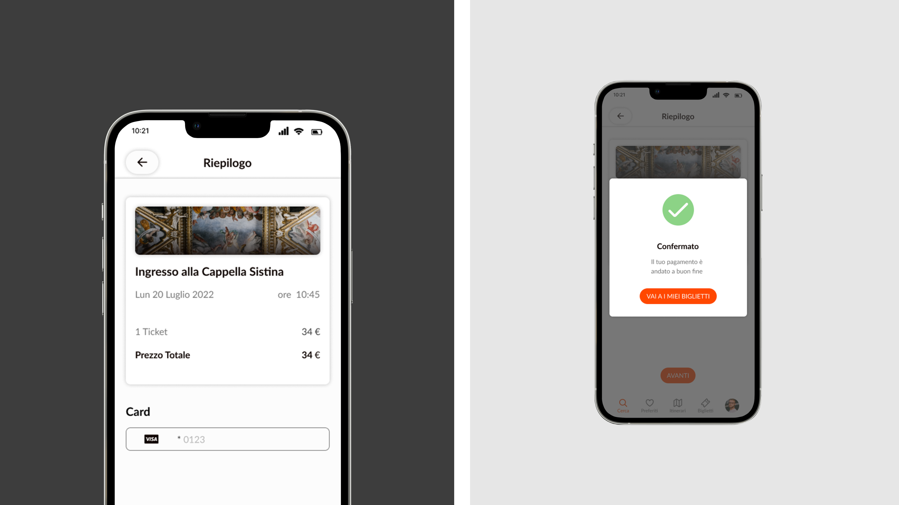
I miei itinerari
Qui viene mostrata la pianificazione dei viaggi. Organizzare l’itinerario in maniera dettagliata è molto semplice, avendo sempre a portata di mano orari e posizione delle attività.
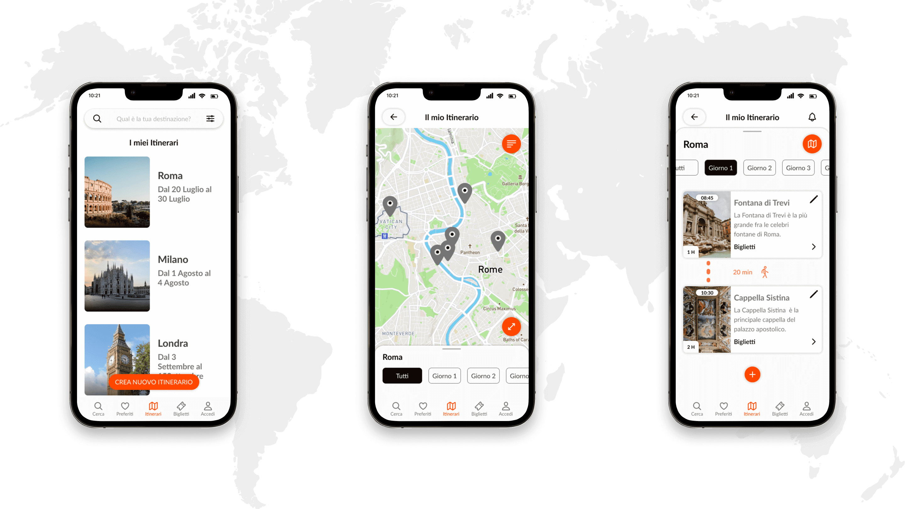
Preferiti
Sezione dedicata al riepilogo delle città e dei luoghi preferiti.
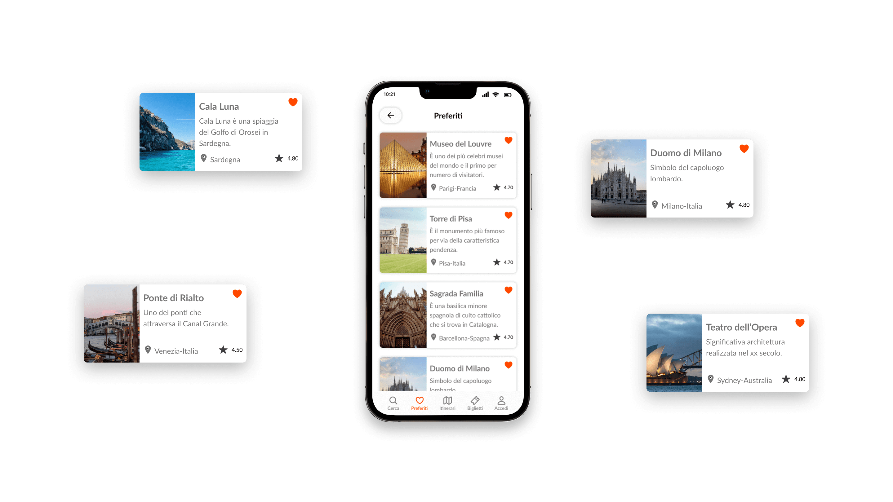
Profilo
Effettuando l’accesso l’utente può sfruttare tutte le funzionalità dell’app (creare itinerari, prenotare posti/attività...). Qui l’utente può modificare tutte le informazioni personali.
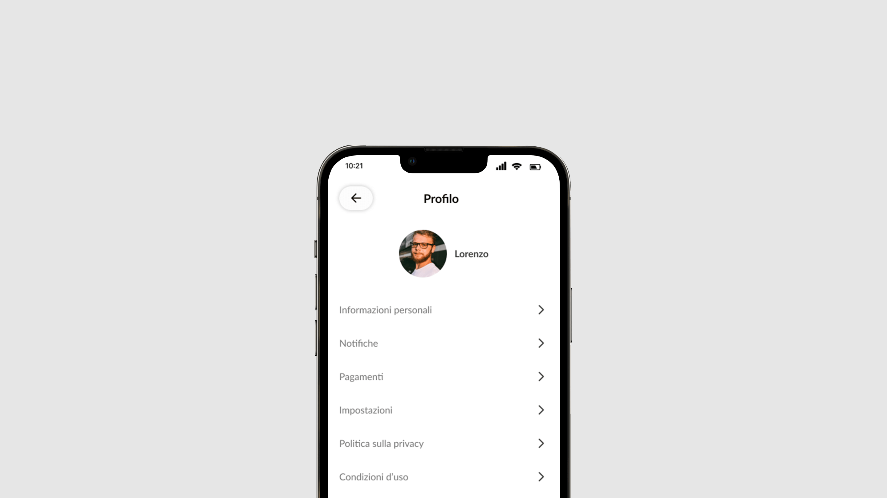